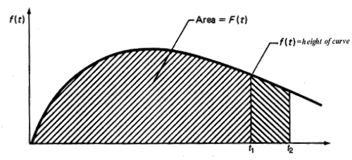

|
8.
Assessing Product Reliability
8.1. Introduction 8.1.2. What are the basic terms and models used for reliability evaluation?
|
|||
| Life distribution models describe how non-repairable populations fail over time |
A repairable system is one which can be restored to satisfactory
operation by any action, including parts replacements or changes to
adjustable settings. When discussing the rate at which failures occur
during system operation time (and are then repaired) we will define a
Rate of Occurrence of Failure (ROCF) or "repair rate". It would be
incorrect to talk about failure rates or hazard rates for repairable
systems, as these terms apply only to the first failure times for a
population of non repairable components.
A non-repairable population is one for which individual items that fail are removed permanently from the population. While the system may be repaired by replacing failed units from either a similar or a different population, the members of the original population dwindle over time until all have eventually failed. We begin with models and definitions for non-repairable populations. Repair rates for repairable populations will be defined in a later section. The theoretical population models used to describe unit lifetimes are known as Lifetime Distribution Models. The population is generally considered to be all of the possible unit lifetimes for all of the units that could be manufactured based on a particular design and choice of materials and manufacturing process. A random sample of size \(n\) from this population is the collection of failure times observed for a randomly selected group of \(n\) units. |
||
| Any continuous PDF defined only for non-negative values can be a lifetime distribution model |
A lifetime distribution model can be any
probability density function (or PDF) \(f(t)\)
defined over the range of time from \(t = 0, \, \ldots, \, \infty\).
The corresponding cumulative distribution function (or CDF) \(F(t)\)
is a very useful function,
as it gives the probability that a randomly selected unit will fail by
time \(t\).
The figure below shows the relationship between \(f(t)\) and \(F(t)\)
and gives three descriptions of \(F(t)\).
 The figure above also shows a shaded area under \(f(t)\) between the two times \(t_1\) and \(t_2\). This area is \([F(t_2) - F(t_1)]\) and represents the proportion of the population that fails between times \(t_1\) and \(t_2\) (or the probability that a brand new randomly chosen unit will survive to time \(t_1\) but fail before time \(t_2\)).1. \(F(t)\) = the area under the PDF \(f(t)\) to the left of \(t\). Note that the PDF \(f(t)\) has only non-negative values and eventually either becomes 0 as \(t\) increases, or decreases towards 0. The CDF \(F(t)\) is monotonically increasing and goes from 0 to 1 as \(t\) approaches infinity. In other words, the total area under the curve is always 1. |
||
| The Weibull model is a good example of a life distribution |
The 2-parameter Weibull distribution is an
example of a popular \(F(t)\).
It has the CDF and PDF equations given by:
$$ \begin{eqnarray}
F(t) & = & 1 - e^{-(t/\alpha)^\gamma} \\
& & \\
f(t) & = & \frac{\gamma}{t} \left(\frac{t}{\alpha} \right)^\gamma e^{-(t/\alpha)^\gamma}
\end{eqnarray} $$
where \(\gamma\)
is the "shape" parameter and \(\alpha\)
is a "scale" parameter called the characteristic life.
Example: A company produces automotive fuel pumps that fail according to a Weibull life distribution model with shape parameter \(\gamma\) = 1.5 and scale parameter 8,000 (time measured in use hours). If a typical pump is used 800 hours a year, what proportion are likely to fail within 5 years? Solution: The probability associated with the 800*5 quantile of a Weibull distribution with \(\gamma\) = 1.5 and \(\alpha\) = 8000 is 0.298. Thus about 30 % of the pumps will fail in the first 5 years. Functions for computing PDF values and CDF values, are available in both Dataplot code and R code. |
||